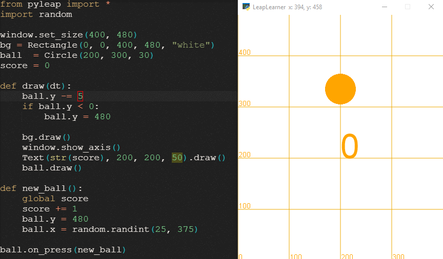
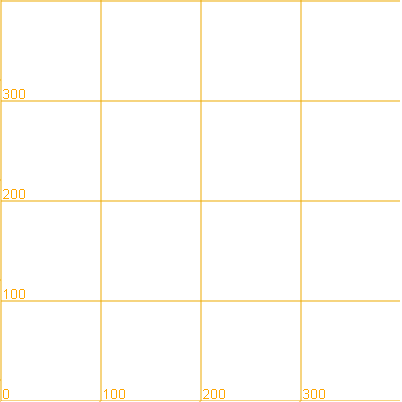
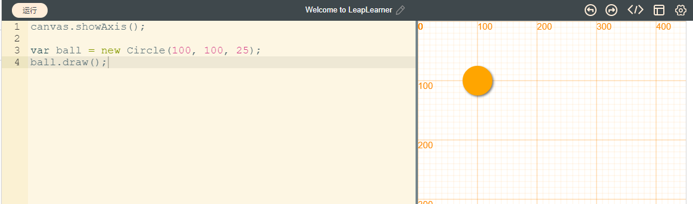
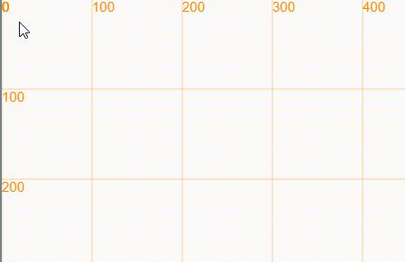
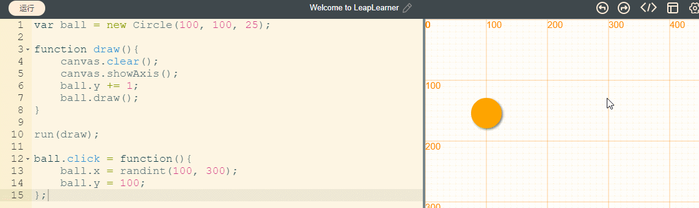

第一个小程序¶
让我们开始开发我们的第一个小程序，一个接球的小游戏。在开发这个小游戏时，你可能对其中很多概念都不懂，不要担心，按照提示步骤一步步去做，你会发现这一切是多么的简单！
目标：从零开始制作一个接球小游戏¶
游戏规则很简单，让小球从上方掉落，每次点中小球，分数加1，让小球从上方随机掉落。

了解我们的画布¶
新建一个项目，修改项目默认代码，在draw(dt)(第4行)函数下添加以下代码，然后点击运行按钮，顺利的话，你就可以看到画布上显示出了坐标。
def draw(dt):
window.showAxis()

代码书写注意事项
在Python中，缩进是非常重要的，一般是4个空格，任何缩进上的错误都将导致代码无法运行
单词必须拼写正确，不能多一个字母，也不能少一个字母，最重要的是，字母的大小写不能写错。
必须是英文符号，特别是点`.`和括号`()`，计算机只能识别英文符号，而不能识别中文符号。
图中的坐标系也称之为笛卡尔坐标系，在数学中被广泛运用，坐标左下角是原点，往右是x轴正方向，往上是y轴正方向。窗口中的点都和坐标一一对应，由此，我们可以使用数字来确定窗口中任意图形的位置。
我们创建一个小球出来¶
创建一个小球，名字为ball，小球的中心坐标点为(300, 200)，大小为25，在pyleap中，圆对象叫做Circle，我们一般用首字母大写来表示一类对象。定义圆的x坐标为300，y坐标为200，半径r为25。
ball = Circle(x=300, y=200, r=25)
如果我们按照x、y、r的顺序来表示Circle的参数，那么就可以省略掉参数的标注，可以直接写成下述方式。
ball = Circle(300, 200, 25)
在第3行，我们创建了一个ball对象，代表了右侧的这个小球。
第4行，我们用draw函数中，我们使用小球的draw方法，将这个小球画在了画布上。

让小球动起来¶
为了让小球动起来，我们需要重复做这么一个操作：
- 把画布清空
- 把小球往下移动一段距离
- 把小球画在画布上
- 每隔一段时间执行以上1-3步代码
当我们非常快的完成1-3步时，同时不停的重复以上步骤，我们就能感觉小球在画布上动起来了！当然，我们需要让计算机帮我们做这么一件事情。
后面的内容还未更新^ ^
定义一个函数，执行以上1-3步骤功能，每次执行这个函数，就会执行1-3步。
function draw(){
canvas.clear();
ball.y += 1;
ball.draw();
}
最后用run方法，每隔一段时间执行这个函数。
run(draw);
我们可以看到，小球动起来了，但是画布的坐标也不见了。这是因为我们在清理完画布之后，没有再把坐标画出来。那么，在清理画布后，重新将坐标显示出来就可以了。那么，到这一步，代码就变为下面的代码。我们不再需要第一行的canvas.showAxis()，因为我们已经在后续的步骤中重复执行这个函数了。
var ball = new Circle(100, 100, 25);
function draw(){
canvas.clear();
canvas.showAxis();
ball.y += 1;
ball.draw();
}
run(draw);

点击小球让小球回到上方¶
完成小球的移动后，小球会一直往下移动，最终离开画布，重新运行才能再次看到小球。我们希望点击小球的时候能让小球回到上方。为此，我们为小球的点击添加一个函数，这个函数的功能是，让小球的y位置回到100。在代码的最后添加几个新的代码行，并将下面的代码写进去。
ball.click = function(){
ball.y = 100;
};
再次运行，点击小球，小球就可以回到100的位置了。接着，为这个函数添加第二个功能，让小球的x位置随机出现在100到300的位置。
ball.click = function(){
ball.x = randint(100, 300);
ball.y = 100;
};
修改原来的函数
在原来的函数基础上，添加新的代码，无需重复写这些代码哦
最终，完整的代码和运行效果应该如下图所示，快看你的作品是不是完成了呢？

添加分数¶
最后一步，为我们的游戏添加一个分数。按照以下步骤，参照最终代码，相信你一定可以完成的！
- 添加一个变量score用来记录分数，默认为0分
var score = 0; - 每次成功点击时，增加1分，
score += 1; - 最后，将分数画在画布上，
text(score, 150, 150, 30)
var ball = new Circle(100, 100, 25);
var score = 0;
function draw(){
canvas.clear();
canvas.showAxis();
ball.y += 1;
ball.draw();
text(score, 150, 150, 30);
}
run(draw);
ball.click = function(){
ball.x = randint(100, 300);
ball.y = 100;
score += 1;
};